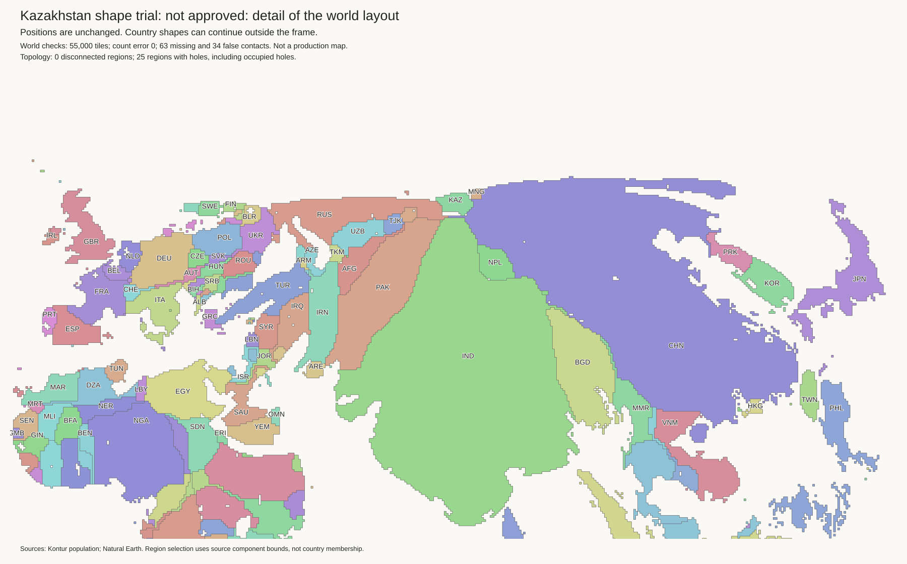
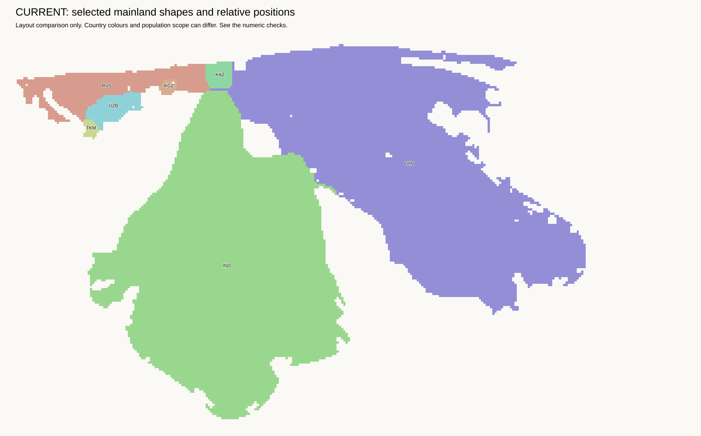
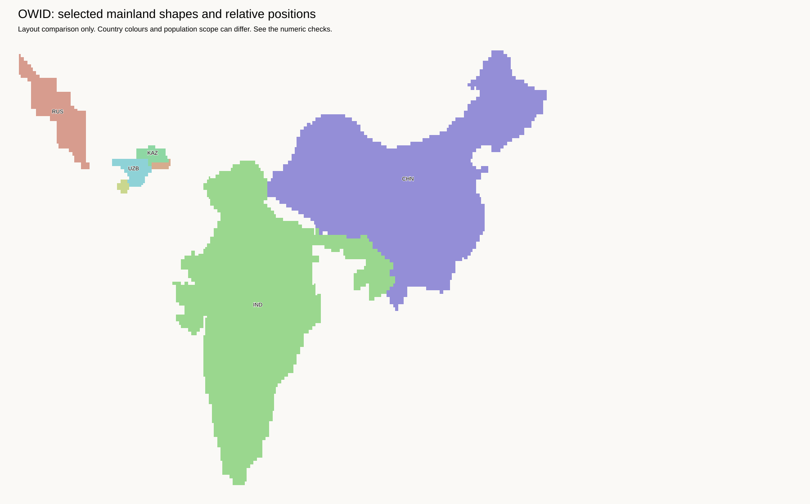

Diagnostic results only. These trials do not replace the combined island-and-lake baseline. No population mapping changed. All images were checked visually.
Removing a border constraint is not sufficient. At 40 rounds, the normal search produced identical cells with and without the selected constraints. A second trial opened the China–Kazakhstan and Kazakhstan–Russia contacts before 80 rounds of refinement. Both contacts formed again. China still has almost the same outline. India was fixed in this narrow test, so its shape could not improve.
The 80-round control and seeded trial each retain 55,000 land tiles, exact component budgets, connected components, and all 220 empty lake cells at their original coordinates. Only the four large endpoint components could move. The seeded result has 38 newly empty enclosed cells, against 19 in the control. Do not accept the small score change as a successful regional fit.
| Outline error; lower is better | Baseline | Control, 80 rounds | Seeded, 80 rounds |
|---|---|---|---|
| China mainland | 0.47087 | 0.46466 | 0.46361 |
| Russia mainland | 0.46915 | 0.40563 | 0.41242 |
| Kazakhstan | 0.50424 | 0.40996 | 0.31057 |
| India mainland | 0.45032 | 0.45032 | 0.45032 |
The score compares equal-area outlines after centroid alignment, without rotation. It does not measure relative position or all aspects of recognisability.

OWID leaves approximately 57 blank cells between the main parts of Kazakhstan and China, and 27 between Kazakhstan and Russia. The combined baseline has contact in both cases. These are nearest grid distances, not widths along the whole border. The world tile totals are similar, but country budgets differ. The trial's 20-cell allowance tests local movement; it is not an OWID-scale fit.
The panels below show only selected mainland parts. Other countries are omitted, so white space is not necessarily sea. Each panel is scaled to fit its frame. OWID has better outline scores for China and Kazakhstan, but a worse unrotated Equal Earth score for Russia. Thus this score alone must not select a layout.


Complete OWID map · Outline and distance measurements
The full contact graph has a protected path from Russia through Azerbaijan, Iran, Afghanistan, Pakistan, India, Bangladesh, and Myanmar to China. Therefore, no cut that removes only currently eligible sparse contacts can separate Russia and China into independent connected groups. This does not prevent a gap at Kazakhstan or local shape improvement. It rules out using two independent, rigid blocks while keeping every dense contact.
Next, test coordinated deformation of the surrounding countries. Permit selected sparse contacts to open, but keep dense contacts. Let shape guides move within bounds instead of fixing every guide at its current centroid. Compare against a control with the same movable countries. Require visible improvement in Russia, China, and India, without new narrow connecting paths or large enclosed holes. Do not move the current distorted shapes apart as rigid blocks.
The population audit uses 25 km corridors, mean density at most 20 people/km², and segment p90 density at most 50 people/km². Scope: eligible borders incident to Kazakhstan, with at least 16 tiles at each endpoint. This selects China, Russia, and Turkmenistan. The Turkmenistan contact is already missing.
Both 80-round runs use eight choices, guide weight 16, gap cost 1, maximum gap 20, and interior gap budget 1,000. The seeded run allows two border openings with an energy increase limit of 2,000 each. These are diagnostic settings, not defaults.